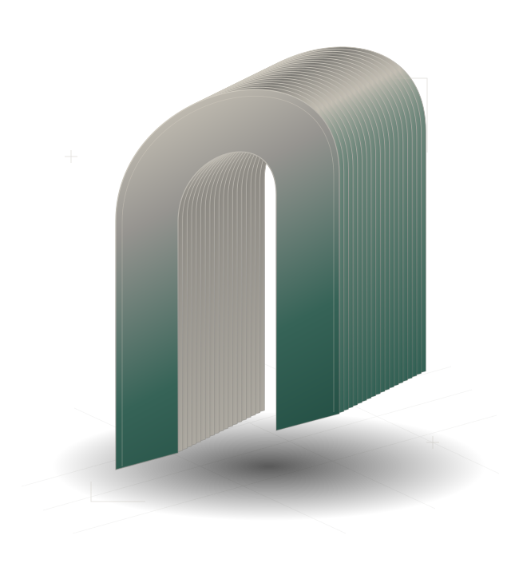

Consultivo e contencioso · Joinville, SC
Assessoria jurídica
para empresas
em movimento.
Direito empresarial, civil e trabalhista patronal.
Da orientação preventiva à condução de litígios.

Da análise
à ação.
Quatro frentes de trabalho para acompanhar operações, orientar decisões e conduzir disputas.
01
Consultivo estratégico
Assessoria em operações societárias, contratos e relações de trabalho. A análise jurídica participa do planejamento e das decisões do dia a dia da empresa.
Explorar atuação
02
Contencioso judicial e arbitral
Representação em processos judiciais e arbitrais nas áreas cível, empresarial e trabalhista, com estudo dos fatos, das provas e dos caminhos de cada caso.
Explorar atuação
03
Pareceres e notas técnicas
Análise de questões jurídicas relacionadas a operações e litígios. Pareceres e notas técnicas apresentam fundamentos e implicações para apoiar a tomada de decisão.
Explorar atuação
04
Co-counseling
Colaboração com outros escritórios no desenvolvimento de teses e na condução de casos de maior complexidade, respeitando as necessidades de cada trabalho.
Explorar atuaçãoA estratégia começa
pelo seu contexto.
Cada caso é estudado a fundo. A atuação combina análise técnica e atenção ao contexto de quem precisa decidir.
Conheça o escritórioComeçar pelo contexto.
Os fatos, os documentos e as necessidades de cada cliente são o ponto de partida.
Dar fundamento às escolhas.
Rigor técnico para examinar caminhos jurídicos e suas implicações.
Manter a direção.
Atuação consultiva e contenciosa alinhada às particularidades da demanda.
 Ciro Sandes / Advocacia estratégica
Estudo. Critério. Direção.
Ciro Sandes / Advocacia estratégica
Estudo. Critério. Direção.
Advogado / Joinville, SC
Antonio Ciro
Sandes de Oliveira.
Atuação em direito empresarial, civil e trabalhista patronal. Assessoria consultiva, representação em litígios e elaboração de pareceres técnicos.
Conheça a atuação do advogado